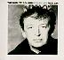

FAC 201
|
Additional Notes:
Bar at 28-30 Oldham Street, Manchester, opened July 1989.
The number is visible on numerous Dry items and merchandise, as well as a black badge.
FAC 202
|
Additional Notes:
A British Airways charity event in London.
FAC 203
|
Additional Notes:
Factory promotional gift ruler for FACT 200.
FACT 204
|
Contents:
LP: UK 1987 (Factory FACT 204) CD: UK 1987 (Factory FACD 204) * CS: UK 1987 (Factory FACT 204C) DAT: UK 1987 (Factory FACT 204D) ** 4:03 Arpeggiator 3:47 What Is It to Me (Woman) 3:13 Red Shoes 2:41 Jongleur Grey 3:13 When the World 2:22 U.S.P. 5:50 Bordeaux Sequence 3:08 Pol in B 4:48 English Landscape Tradition 5:14 Miss Haymes 1:42 Don't Think You're Funny 3:00 Dream Topping * 3:38 You Won't Feel Out of Place * 4:57 28 Oldham Place * ** Supposedly the world's first DAT album.
Additional Notes:
Re-released 1996 through Factory Once.
FACT 205
|
Contents:
LP: UK 1988 (Factory FACT 205) CD: UK 1988 (Factory FACD 205) CS: UK 1988 (Factory FACT 205C) 5:55 Pressure 2:54 Invisible You 7:07 Bounce-Back 7:32 Another Star 4:20 Ook! This Feeling 3:55 Pandemonium
FACT 206
|
Contents:
LP: UK 1988 (Factory FACT 206) CD: UK 1988 (Factory FACD 206) CS: UK 1988 (Factory FACT 206C) 4:46 That Twinkle (In Your Eye) 3:18 Casabel 4:22 Sad and Blue 3:36 Over the Waves 3:28 Now You're Mine 4:40 The Strangest Thing 3:55 Special Way 5:01 Autumn Leaves 5:02 Julan
FACD 207
|
Contents:
CDS: UK 1989 (Factory FACD 207) 2:23 Woodland Rock 3:53 Stranger 2:26 Travellin' Home 3:39 Charley James 2:31 Fixin' To Die 3:22 Subterranean Home Sick Blues
Additional Notes:
FAC 207 number also allocated to LITTLE BIG BAND: 'Digital Buskingomo Video' in January 1988, but more information is required.
"Little Big Band, aka Rob Gray was my art teacher at college in Manchester and he was somewhat of a notorious busker around time from 1986 onwards. Rob busked on the steps of the Royal Exchange Theatre, every Saturday, week in-week out. Factory signed him for this compilation but me and a few others have the original demo, before it was released on Factory, but with the same cover. Rob also had a bit of the Factory spirit about him prior to becoming involved with the label - he 'issued' Access All Areas passes to all his friends, certain colours for certain years etc. This was a great blag of course as we would use them to get in all manner of gigs around town!!" - Helen Hughes
Number also seen on a copy of what is actually FAC 277.
FAC 208
|
Additional Notes:
Also applies to Ticket Stub '208 Disorder' of the event 17 December 1988.
This was a party in the Hacienda basement, after New Order's and Happy Mondays' gig at the G-Mex.
Also known as the 'E-Party'.
FAC 209
|
Additional Notes:
Supposedly a film shoot for FACT 181 with the Mondays playing a gang of car thieves.
Possibly also the shooting of the 'Wrote For Luck' video, at the Legends Disco, 27 October 1988, and issued as an ultra-limited edition Happy Mondays 'in-house' CD Video.
See also FACT 210 below.
FACT 210
|
Contents:
LP: UK 1991 (Factory FACT 210) CS: UK 1991 (Factory FACT 210C) CD: UK 1991 (Factory FACD 210) 5:53 To Close Your Eyes Forever 3:53 Unforgettable 6:34 Moves Like You 6:27 Watching You 6:57 Beast on the Streets 6:36 Subtitled 4:34 Next Time (He's Mine) 4:19 England Made Me 4:12 Send Me Over 4:16 Train You're On
Additional Notes:
Number also allocated to a MIAOW LP titled 'Priceless Innuendos', which was recorded but never released. The LP was also supposed to be preceded by a single 'Dusty Springfield' as FAC 209.
FAC 211
|
Contents:
VHS: UK 1988 (Factory FAC 211) [promo]
14:00 {interviews}
Additional Notes:
An 18-minute Channel 4 TV documentary on the release of FACT 250, broadcast 1 July 1988. Includes interviews with Tony Wilson, Rob Gretton, Alan Erasmus, Paul Morley, Peter Hook, Steven Morris, Bernard Sumner, and a statement (!) from Martin Hannett.
Later issued in an edited form for promotional purposes, and also found on FAC 277 which was never publically available.
Number also allocated to a 'Book of Ideas' concept as stated in FACT 400. No other information available.
FAC 212
|
Contents:
7": UK 1988 (Factory FAC 212/7) 3:41 Wrote For Luck 2:47 Boom 12": UK 1988 (Factory FAC 212) CDS: UK 1988 (Factory FACD 212) 3:41 Wrote For Luck (Radio Mix) 5:41 Wrote For Luck (Dance Mix) 5:45 Wrote For Luck (Club Mix) 2:47 Boom 12": UK 1988 (Factory DJ FAC 212) [white label promo] 5:40 Wrote for Luck (Machine Mix) 5:45 Wrote for Luck (Alternative Mix)
Additional Notes:
FAC 213
|
Contents:
7": UK 1988 (Factory FAC 213) 4:11 Atmosphere 4:15 The Only Mistake 12": UK 1988 (Factory FAC 213.12) 4:11 Atmosphere 4:15 The Only Mistake 3:53 Sound Of Music CS: AU 1988 (Factory FACC 213) 4:11 Atmosphere 4:15 The Only Mistake 3:45 Transmission [live] CDS: UK 1988 (Factory FACD 213) 4:11 Atmosphere 3:45 Transmission [live] 3:14 Love Will Tear Us Apart VHS: UK 1988 (Factory FACV 213) [promo] ?:?? Atmosphere [promo video] CDV: UK 1988 (Factory FACDV 213) [promo] * ?:?? Atmosphere [promo video] (unknown audio track content) * Blank (i.e no artwork) CDV with no info on it.
Additional Notes:
FAC 214
|
Contents:
7": UK 1987 (Factory FAC 214) [square shaped flexi-disc] 1:22 Jongleur Grey 1:17 Bordeaux Sequence 1:16 English Landscape Tradition 0:56 U.S.P.
Additional Notes:
A free promo record containing excerpts from FACT 204.
FAC 215
|
Additional Notes:
Hacienda House Wine, 200 bottle edition.
Peter Saville designed the label.
FAC 216
|
Additional Notes:
Hacienda House Wine, 200 bottle edition.
Peter Saville designed the label.
FACT 217
|
Contents:
LP: UK 1989 (Factory FACT 217) CD: UK 1989 (Factory FACD 217) CS: UK 1989 (Factory FACT 217C) 3:28 Who Wants to Change the World 1:59 Somewhere, Anywhere 3:29 On a Slip 2:17 The Razor of Truth (Slice Up Yer Life Mix) 4:01 Falling 2:15 Go 2:39 Mother of the Sea 2:02 Earthbound 3:03 Dangerously Loose 2:53 For Whom the Bell Tolls
FACD 218
|
Contents:
CDS: UK 1989 (Factory FACD 218) 3:26 Who Wants to Change the World? 2:29 Money 2:37 Mother of the Sea
FACD 218
|
Contents:
CD: UK 1989 (Factory FACD 219) 4:34 Zamba Zippy 5:34 Tender Games 4:20 Smiling Hour 5:13 Flyaway 4:21 Trickery 6:47 Land of my Dreams 3:39 Sparkle 4:37 Whispered Words 5:07 Sugar and Spice 5:19 Mystic Rhythms 4:09 After Hours 4:25 Start the Melody 3:36 Token Freaky 4:13 Love Suspended 3:34 Wierd Feelings 5:28 The Dance
Additional Notes:
A greatest hits CD, but not labelled as such.
FACT 220
|
Contents:
LP: UK 1988 (Factory FACT 220) * LP: UK 1988 (Factory FACT 220) ** CD: UK 1988 (Factory FACD 220) CS: UK 1988 (Factory FACT 220C) DAT: UK 1988 (Factory FACT 220D) 3:24 Country Song 3:36 Moving In With 4:35 Mad Cyril 3:25 Fat Lady Wrestlers 4:07 Performance 3:10 Brain Dead 6:05 Wrote For Luck 3:45 Bring A Friend 2:29 Do It Better 2:48 Lazy Itis 6:12 W.F.L. (The Vince Clarke Mix) ** * First edition LP had 'Happy Mondays Bummed' embossed. ** Later editions had title printed, not embossed.
FAC 221
|
Additional Notes:
A black/bronze badge displaying the Factory US logo, and FAC 221 on the back. The badge came with a little card 'Factory Goes to Hollywood'. It was issued at the same time Tony Wilson went to LA to raise funds for FACT 181.
Factory later forgot about having allocated the number already, and allocated the number to their Contract Binders from mid-1990 starting with Cath Carroll (who alledgedly signed an 8-LP deal!). The binder takes the form of a 12"x12" plate with a piece of glass or clear thick plastic on it, with the contract in between. The pieces are held together with 4 large metal bolts.
FAC 222
|
Contents:
7": UK 1989 (Factory FAC 222/7) 12": UK 1989 (Factory FAC 222) CS: UK 1990 (Factory FAC 222C) 3:53 Lazyitis (One Armed Boxer) 3:52 Mad Cyril (Hello Girls) 12": UK 1989 (Factory FAC 222R) [white label promo] * ?:?? Mad Cyril (Manic Dance Mix) : * Existence needs to be confirmed.
Additional Notes:
Number also applies to promotional video.
FAC 223
|
Contents:
7": UK 1988 (Factory FAC 223-7) 7": UK 1988 (Factory FAC 223/7) [pink sleeve promo] 3:08 Fine Time 4:30 Don't Do It 12": UK 1988 (Factory FAC 223) 12": UK 1988 (Factory FAC 223DJ) [pink sleeve promo] 4:42 Fine Time 4:30 Don't Do It 4:43 Fine Line 12": UK 1988 (Factory FAC 223R) 6:15 Fine Time (Silk Mix) 4:35 Fine Time (Messed Around Mix) CDS: UK 1988 (Factory FACD 223) 3:08 Fine Time (7" version) 6:15 Fine Time (Silk Mix) 4:35 Fine Time (Messed Around Mix) 4:30 Don't do it
Additional Notes:
FACD 224
|
Contents:
4xCD: UK 1988 (Factory FACD 224) [Components listed individually @ their catalogue numbers]
Additional Notes:
Double-CD box consisting of FACT 14 + 44 + 74 + 84 + FAC 114.
FACT 400 refers to this as 'The Early Years Japonica'.
FACT 225
|
Contents:
VHS: UK 1989 (Factory/Virgin FACT 225) ?:?? Confusion ?:?? The Perfect Kiss ?:?? Shellshock ?:?? Bizarre Love Triangle ?:?? True Faith ?:?? Touched By The Hand Of God ?:?? Blue Monday 1988
Additional Notes:
Also includes "The Happy One" pieced between clips.
FACT 226
|
Contents:
LP: UK 1989 (Factory FACT 226) CS: UK 1989 (Factory FACTC 226) CD: UK 1989 (Factory FACD 226) DAT: UK 1989 (Factory FACT 226D) [BENJAMIN BRITTEN - Simple Symphony] 3:07 Boisterous Bourree 3:16 Playful Pizzicato 7:18 Sentimental Sarabande 2:44 Frolicsome Finale 8:41 ZORAN ERIC - Cartoon [BENJAMIN BRITTEN - Variations on a theme of FrankBridge] 1:36 Introduction and Theme 1:58 Adagio 1:03 March 1:24 Romance 1:16 Aria Italiana 1:23 Bouree Classique 2:55 Weiner Waltz 1:11 Moto Perpetua 3:32 Funeral March 1:28 Chant 7:00 Fugue and Finale 3:25 M THOMAS - Wir Wandelten (Johannes Brahms)
FAC 227
|
Additional Notes:
A 3-part catalogue published by NME during June/July 1989 in 'Fred Facts'. The 1/7/89 issue contained a picture of Tony Wilson's letter of authorisation.
FAC 228
|
Contents:
7": UK 1989 (Factory FAC 228/7) 4:07 Wimoweh 89 (Edit) 5:57 Wimoweh Instrumental (Edit) 7": UK 1989 (Factory FAC 228) [white label promo] * 4:07 Wimoweh 89 (Edit) 4:07 Wimoweh 89 (Edit) 12": UK 1989 (Factory FAC 228) 5:04 Wimoweh 89 5:14 Wimoweh Instrumental VHS: UK 1989 (Factory FAC 228) [PAL promo] 3:54 Wimoweh 89 * Plain white sleeve. Label design totally different to commercial b release, states: "Karl Denver meets Pickering and Park. Summer, 89. DJ copy". Graphics: pink text on blue background.
FAC 229
|
Additional Notes:
A 24 page 13"x10" book celebrating 10 years of Factory (79-89) containing a label chronology and pieces by various staff members.
Free with 'Music Week' 15 July 1989.
FACT 230
|
Contents:
LP: UK 1990 (Factory FACT 230) CD: UK 1990 (Factory FACD 230) CS: UK 1990 (Factory FACD 230C) 5:30 Pineapple Face 5:10 Big Bang 5:45 Kiss the Chrome 5:09 Slave 4:40 Bleachman 3:50 Surf Nazi 5:25 Fag Hag 3:09 It's Quiet
FAC 231
|
Additional Notes:
Factory ad in 'Music Week' for John Peel's 50th birthday.
FAC 232
|
Contents:
7": UK 1989 (Factory FAC 232/7) [DJ Edition] 3:12 W.F.L. (The Vince Clarke Mix) (Edit) 6:02 W.F.L. (The Vince Clark Mix) 12": UK 1989 (Factory FAC 232) 6:12 W.F.L. (The Vince Clarke Mix) 7:12 W.F.L. (Think About The Future Mix) CDS: UK 1989 (Factory FACD 232) 6:12 W.F.L. (The Vince Clarke Mix) 7:12 W.F.L. (Think About The Future Mix) 3:53 Lazyitis (One Armed Boxer)
Additional Notes:
W.F.L stands for Wrote For Luck, and the tracks are remixes thereof.
Apparently there is also a standard 7" edition. More details required.
FAC 233
|
Additional Notes:
New Order's / Joy Division's accounts.
|  |
FACD 234
|
Contents:
CDS: UK 1989 (Factory FACD 234) 5:27 Otis 3:18 English Landscape Tradition 5:12 Finding the Sea 6:09 Bordeaux
Additional Notes:
Re-released 1996 through Factory Once.
FAC 235
|
Additional Notes:
Promotional gift (as seen in "Blue Monday 1988" video clip), and also Factory's 1988 Xmas present. 350 manufactured, 250 mailed out.
"New Order's video producer, Michael Shamberg, created a unique collaboration for the video for Blue Monday 1988, the Quincy Jones remix. He invited Robert Breer, the godfather of American Animation to work with Bill Wegman, the rising photographic star, whose pictures of his Weimaraner, Man Ray, were beginning to win him wide acclaim. All three working out of New York - Robert lived just up the Hudson - they created the video where Weimaraner and musicians seem to spend most of their time dodging tennis balls. Breer made a hand painted animation flick book featuring Bill Wegman's Fay Wray, and a stick, which was filmed for inclusion in the video. The band are also seen "flicking" the original book. Factory made exact copies of the hand painted book down to weight of card and shaping of edges and used them as their 88 Xmas gift. And it works too, just like Robert intended. " (AHW)
FACT 236
|
Contents:
LP: UK 1989 (Factory FACT 236) CS: UK 1989 (Factory FACTC 236) CD: UK 1989 (Factory FACD 236) DAT: UK 1989 (Factory FACT 236D) [FRANCIS POULENC - Sonata] 4:34 Elegie 3:53 Scherzo 4:12 Deploration [BENJAMIN BRITTEN - Six Metamorphoses] 2:19 Pan 1:18 Phaeton 2:18 Niobe 2:06 Bacchus 2:56 Narcissus 2:26 Arethusa [PAUL HINDEMITH - Sonata] 4:02 Munter 8:16 Sehr Langsam 9:36 LALLIET - Prelude and Variation
FAC 237
|
Additional Notes:
Unreleased video concept.
FAC 238
|
Additional Notes:
Issued some time in 1989 to celebrate Manchester's bid for the 1996 Olympic Games.
FAC 239
|
Additional Notes:
An A5 xeroxed fanzine run by a guy named Jim. He sent the first copy to Tony Wilson requesting a FAC number. Wilson returned the note, attaching a white label 7" of 'Hallelujah" and a message saying 'Halcyon Daze' was FAC 239. 3 further issues appeared before Jim called it a day. He tried to sell (!) the number to anyone who wanted to go on with the 'zine, and was offered 100,-. End of story.
FAC 240
|
Additional Notes:
Huge deluxe table-of-elements style calendar (22"x46"), starting 24 January 1988.
Wrapped in memorial wrapper.
Issued to celebrate Factory's/The Movement of the 24th January's 10th anniversary (10x24=240!). Limited edition of 200.
FAC 241
|
Additional Notes:
This T-shirt, together with FAC 261, was a Bailey Brothers idea to go with FACT 181. A third T-shirt - "Nigel Madsell From The Isle Of Mad" was never released.
Question is, is it to do with the city, or the label? Prophetic stuff :)
|
|
FAC 242
|
Contents:
7": UK 1989 (Factory FAC 242/7)
7": UK 1989 (Factory FAC 242/7) *
6:14 Hallelujah
2:49 Holy Ghost
3:29 Clap Your Hands
6:03 Rave On
12": UK 1989 (Factory FAC 242)
12": UK 1989 (Factory FAC 242) **
CDS: UK 1989 (Factory FACD 242)
6:21 Hallelujah
2:49 Holy Ghost
3:29 Clap Your Hands
6:12 Rave On
CS: UK 1989 (Factory FAC 242C)
3:18 Hallelujah
2:49 Holy Ghost
3:29 Clap Your Hands
6:12 Rave On
7": UK 1989 (Factory FACR 242) [white label promo] ***
3:59 Hallelujah (The Oakenfold Remix - Edit)
3:59 Hallelujah (The Oakenfold Remix - Edit)
7": UK 1989 (Factory FAC 242R/7)
7": UK 1989 (Factory FAC 242R/7) [white label promo]
CS: UK 1989 (Factory FAC 242RC) ****
2:41 Hallelujah (MacColl Mix)
5:39 Rave On (Club Mix) ****
4:42 Hallelujah (In Out Mix)
12": UK 1989 (Factory FAC 242R)
CDS: UK 1989 (Factory FACD 242R)
6:28 Hallelujah (Club Mix)
5:39 Rave On (Club Mix)
4:42 Hallelujah (In Out Mix)
CDS: UK 1989 (Factory FACD 242+) [promo] *****
CDS: UK 1989 (Factory FAC 242 RADIO) [promo] ******
2:41 Hallelujah (MacColl Mix)
3:35 Clap Your Hands
* Numbered, limited 7" in 'Madchester' logo embossed gatefold sleeve,
with space to hold FAC 242R/7.
** Limited 12" with 'Madchester' logo embossed sleeve.
*** 500 copies pressed. Oakenfold Edit is edit of Club Mix.
***** This item has the exact same picture inlay and the same painted disc as
FACD 242R, however, the disc itself has a different catalogue number and
different tracks. I think this is a misprint.
****** Issued as 'Rave On, Radio Only CD' with a white inlay and blue printing.
Additional Notes:
Factory also released a video 'Madchester Rave On' through Virgin Vision, featuring Kuff Dam, Tart Tart, Wrote for Luck, Mad Cyril, 24 Hour Party People, Performance, W.F.L, Lazyitis - One armed boxer, Hallelujah, Clap Your Hands, and Wrote for Luck (Live at the Ritz). An actual catalogue number doesn't appear to have been allocated.
FAC 243
|
Additional Notes:
Cherub as used on cover of FACT 275.
FACT 244
|
Contents:
LP: UK 1989 (Factory FACT 244) CD: UK 1989 (Factory FACD 244) * CS: UK 1989 (Factory FACT 244C) DAT: UK 1989 (Factory FACT 244D) * 2:47 Love No More 2:59 Pol in G 2:13 Opera I 4:59 People's Pleasure Park 3:12 Red Square * 9:48 Finding the Sea 4:17 Otis 2:15 William B * 3:57 They Work Every Day 2:58 Opera II 2:04 Homage to Catalonia 4:04 Requiem Again 3:01 My Country
Additional Notes:
Initial copies packaged with FAC 244+ (see below)
Re-released 1996 through Factory Once.

|
FACT 244+
|
Contents:
7": UK 1989 (Factory FACT 244+) CD3: UK 1989 (Factory FACD 244+) 1:55 I Know Very Well How I Got My Note Wrong
Additional Notes:
Bonus free single with FACT/FACD 244.
An out-take from the recording sessions for Morrissey's "Viva Hate" LP sessions, of which his "Suedehead" EP was sourced (including the proper take of this track as a B-side). Vini Reilly was a guest artist.
FAC 245
|
Additional Notes:
1989 Christmas present, pictures from Madchester. A sequence of 5 cards in a folder, featuring a Madchester roadsign, Madchester 1996 The British Olympic Bid (pic of the city hall), Madchester Picadilly (the railway station), University of Madchester, and Madchester United (pic of Old Trafford stadium).
FACT 246
|
Contents:
LP: UK 1989 (Factory FACT 246) CS: UK 1989 (Factory FACTC 246) CD: UK 1989 (Factory FACD 246) DAT: UK 1989 (Factory FACT 246D) [DIMITRI SHOSTAKOVITCH - String QuarterNo. 8, Opus 110] 4:40 Largo 2:41 Allegro Molto 3:56 Allegretto 5:27 Largo 3:39 Largo [MICHAEL TIPPETT - String Quartet No.3] 8:08 Grave e Sostenuto - Allegro Moderato 6:39 Andante 3:33 Allegro Molto e con Brio 7:30 Lento 4:06 Allegro Comodo
FAC 247
|
Contents:
7": UK 1989 (Factory FAC 247/7) [white label promo] 4:05 7 Reasons 4:05 Jesus, I Love You (7" Edit) 12": UK 1989 (Factory FAC 247) 6:56 Jesus, I Love You 4:05 7 Reasons 5:44 Love You Too ~ I've Had It Now Man ~ They're Being Funny With Me CDS: UK 1989 (Factory FACD 247) 4:05 7 Reasons 4:05 Jesus, I Love You (7" Edit) 5:04 Bleach Boy 6:56 Jesus, I Love You
Additional Notes:
Product has no front or side title, other than 'Revenge', but is often referred to as '7 Reasons' or 'Jesus, I Love You'.
FAC 248
|
Additional Notes:
This was a full page ad in NME and Music Week (amongst others) 17 March 1990 for FACD 40 and FACD 170, as well as Factory's DAT back catalogue.
FACT 249
|
Contents:
LP: UK 1990 (Factory FACT 249) CD: UK 1990 (Factory FACD 249) CS: UK 1990 (Factory FACT 249C) 5:58 Shine 5:23 A Thousand Signs 4:05 Take It Easy 5:03 Interstella 6:03 All The Way Through 5:17 Big Fat City 4:48 The Groovy One 1:51 Azure 4:20 Unreal
FACT 250
|
Contents:
LP: UK 1988 (Factory FACT 250) 2:25 Warsaw 2:35 Leaders of Men 2:49 Digital 6:07 Autosuggestion 3:35 Transmission 4:45 She's Lost Control 2:51 Incubation 4:53 Dead Souls 4:09 Atmosphere 3:25 Love Will Tear Us Apart CS: UK 1988 (Factory FACT 250C) CD: UK 1988 (Factory FACD 250) DAT: UK 1991 (Factory FACT 250D) 2:25 Warsaw 2:35 Leaders of Men 2:49 Digital 6:07 Autosuggestion 3:35 Transmission 4:45 She's Lost Control 2:51 Incubation 4:53 Dead Souls 4:09 Atmosphere 3:25 Love Will Tear Us Apart [Appendix] 3:43 No Love Lost 3:43 Failures 3:51 Glass 2:26 From Safety to Where...? 3:59 Novelty 3:51 Komakino 3:25 These Days
Additional Notes: